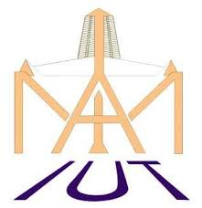

Bienvenue sur la plateforme des IUT
"Nous formons l'élite technologique"

IUT Douala
IUT-FV Bandjoun

IUT Ngaoundéré
"Nous formons l'élite technologique"

Mot du Directeur : L'IUT de Douala s'engage à fournir une éducation de classe mondiale.
Mot du directeur : Un pôle d'excellence académique pour former les techniciens de demain.
Mot du directeur: L'Institut Universitaire de Technologie Fotso Victor propose des formations pointues.
"L'IUT est le socle de l'industrialisation."
— Ministre de l'Enseignement Supérieur
"Une formation pratique et rigoureuse."
— Directeur de l'IUT
"le vivier de nos ingenieurs."
-Directeur General de SNH
📍 Ndogbong, Douala
📧 Info@iut.douala.com
📍 Dang, Ngaoundéré
📧 contact@iut-ngao.com
📍 Bandjoun
📧 iutvf.bandjoun@univ-dschang.org